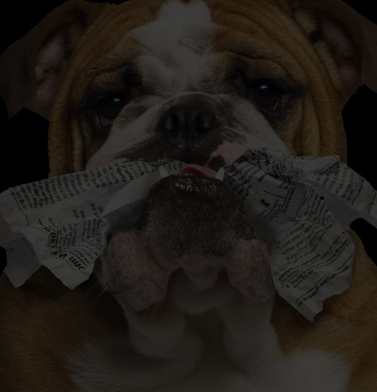
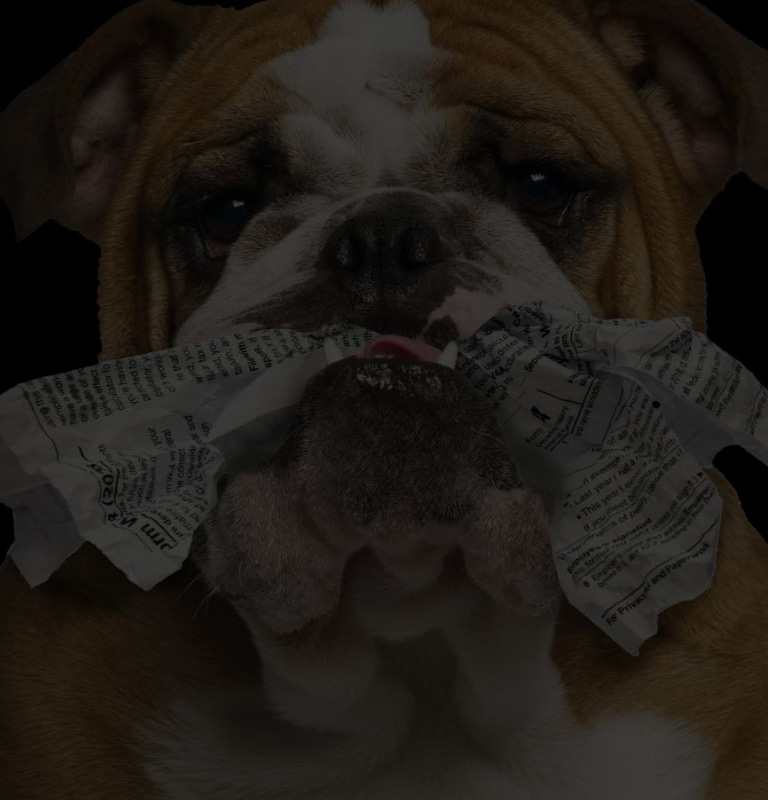
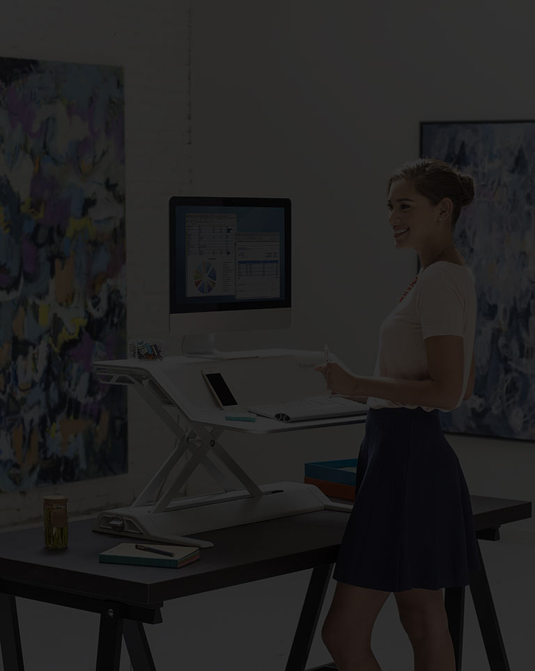
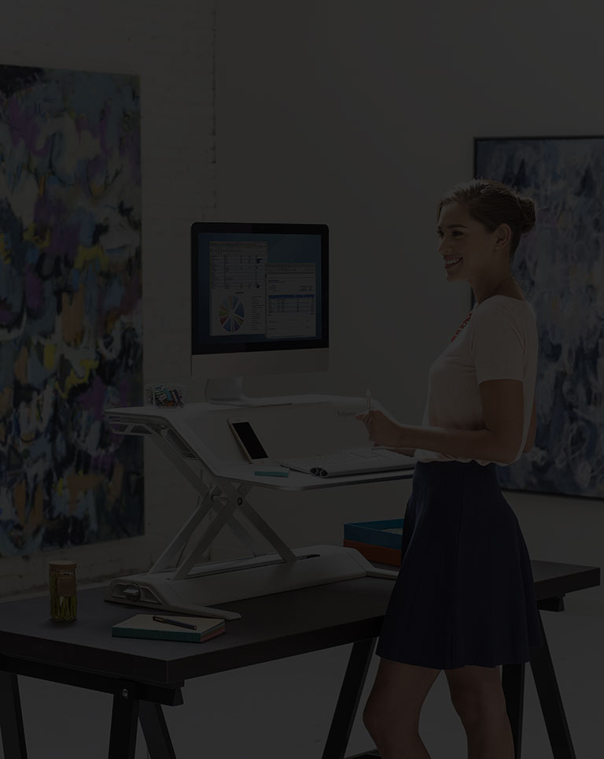

From humble beginnings, the journey of one man changed the course of a family and laid the foundation for a brand that has endured and grown for over a century. From an early stage of life, Harry Fellowes was confronted with challenges, but used each as an opportunity to forge a life of greater excellence and influence. Today, Fellowes remains owned and led by the Fellowes family, now into its 4th generation of leadership. Starting with the original Bankers Box, Fellowes has expanded into broad-based solutions that bring productivity, wellness, and inspiration into WorkLife across the globe.

Born in Ohio in 1879, Harry Fellowes was the youngest of nine children and left school to support his family at age 15, working alongside his father on a textile assembly line. Harry was quickly identified as a high-potential employee and worked his way to the front office learning the tailoring trade. Following his father's death in his early 20's, Harry relocated his family to Chicago, Illinois where he started his own tailoring business. The entrepreneurial lifestyle seemed to fit Harry and he took to the apparel industry naturally, distinguished as a smart and fashionable dresser.


Operating out of the Lees Building in downtown Chicago, Harry came to know another entrepreneur and business owner on his floor, Walter Nickel. A salesperson turned inventor, Walter had recently innovated the Liberty Record Storage Box, which met a developing need for paper storage following the introduction of new records-keeping legislation. Shortly after launching his new idea, Walter received a notice letter from the military informing him of being drafted into World War I. A casual conversation between Walter and Harry became life-changing as Harry proposed that he leave his tailor business, acquire Walter's idea for $121, and make Walter a 50/50 partner when he returned from the war. Harry's proposal was accepted.


Harry's first task was to file a patent on the Liberty Box and register the new name of the business, The Bankers Box Company. With demand growing, the business began to take shape hiring its first 5 employees who would collectively go on to serve 208 years, more than a 40-year average apiece. With an established manufacturing capability, Harry set out across the United States on multi-day trips, building a dealer base of resellers who fell in love with the new opportunity. Experiencing increasing momentum and growth, the fledgling start-up faced a new, sobering challenge on Black Tuesday in October of 1929.

Following the plunge of the Dow Jones by 89% and the new reality of an economic crash, Harry and Walter quickly made adjustments to meet a shrinking market demand. To preserve as much work as possible for existing employees, a pay cut was activated for all owners and employees. Sensitive to the hard times, the Bankers Box Company also started the practice of providing free soup and coffee each day. With banks, the company's primary customer, facing peril the Great Depression accelerated efforts to grow a more diverse and far-reaching customer base. To achieve this, Harry's oldest son, Folger, left college in his Senior year to help his father expand the businesses regions. Harry's other son, John, joined the business shortly thereafter. By the end of the decade, the business achieved record orders and regained its momentum, but a new challenge was on the horizon: World War II.
With Harry's two sons, Folger and John now serving in the military, Harry and Walter had a fundamental challenge that required their concentrated focus, procuring raw materials. With wartime policies tightly rationing materials like corrugate, which represented 98% of Bankers Box contents, Harry negotiated a reoccurring audience with The War Production Board in Washington, D.C. There he highlighted his role in supporting the war effort through supplying Defense Contractors and the benefits of substituting corrugated for other more precious wartime substrates like metal. His effort and logic were rewarded with consecutive 6-month allowances, which increased access to corrugate and allowed the business to continue operations through the war period. The idea of substituting corrugate went further than he could have imagined, including the use of Liberty Boxes as bassinets by hospitals.


With sales exceeding $1M for the first time at the start of the decade, brothers Folger and John Fellowes assumed the President and Vice President roles respectively. To establish a new foundation for increased demand, Bankers Box moved outside of Chicago to Franklin Park. The product line was also expanded with the reintroduction of STAXONSTEEL®, after being discontinued during World War II due to its metal content. Later, the R-Kive® box was introduced, still a best-seller to this day.


AROUND OUR CUSTOMERS
As the Bankers Box Company continued to emerge from a regional to national company that supported thousands of dealers across the US, it became apparent that far-reaching customers could best be served through a local presence. A vision of building 5 regional plants and sales offices across the nation began to take shape which created stronger customer relationships and enhanced, quicker services.
The original Liberty Box was also relaunched in the 1960s with a design that enabled more efficient manufacturing and included features to meet the needs of the emerging work environment.


Following the sudden and heartbreaking death of his older brother Folger, John became the company's third President and primary shareholder at the start of the decade. With his son, Jamie, now alongside him in the business, a new horizon and vision for the business began, international expansion. With stability and an established brand in the office products industry, Canada and the United Kingdom became Bankers Box's first international subsidiaries. Led by the father and son team, two local entrepreneurs were selected, and new teams were created to operate local factories and build capabilities which could serve these different market landscapes. Back home, the Bankers Box Company had outgrown its Franklin Park headquarters and built a new state-of-the-art facility 25 miles outside of Chicago in Itasca, Illinois.


In 1983 Harry's grandson, Jamie, became the company's fourth President. Observing trends in offices, it became clear that workspaces were taking new shape around the prevalence of personal computers and the management of paper records. A vision was cast to reach the existing Bankers Box users and customers with complimentary products around this emerging workspace. Feeling that the Bankers Box brand was limiting in its connection to paper storage, the company introduced a new brand that could be positioned broader, Fellowes®. Throughout the decade shredders, media storage, computer accessories, ergonomic products, and other categories were added to the company's offering under the Fellowes brand. As the business continued to grow in scale and complexity, Jamie turned to his older brother to help lead the business. In 1989, Peter Fellowes joined the company.


Jamie and Peter worked as a team, with Jamie focusing on building the global marketplace and Peter concentrating most of his efforts on internal operations. The Fellowes brand continued to expand through acquisition, but its most significant growth came from a new internally developed invention: the personal shredder. Leveraging its manufacturing and product development know-how, Fellowes designed and created the first shredder which retailed under $100. Making the product more accessible, the application of shredders moved from multi-user machines to a convenient extension of the individual workspace. Meanwhile, Peter led a new transformational initiative called “Advantage Fellowes”. This internal process brought meaningful enhancements to Fellowes' competitiveness through the framework of LEAN operations and Kaizen processes. With a broader base, Fellowes gained more attention from the global industry. Business partners across Europe, Asia, and Australia were formed as Fellowes' presence expanded from 3 to 9 countries.

 

Fellowes's success in shredders presented a new opportunity for global leadership in a growing category. Further fueling the category, identity theft emerged as a household term and shredders became one of the first lines of defense. With a far-reaching product line, Fellowes identified its shredder category as its lead product to shape its new brand equity. Joining the business in 2001, John Fellowes II, joined his father, Jamie, and they partnered to bring strong leadership in this emerging category. Adopting the bulldog as the symbol of protection and trust, the brand took a new shape around technical innovation and differentiating quality, ultimately introducing the first jam-proof shredder.

 

By 2010, technology had transformed the way people worked and bought office products - reshaping workplaces and work behavior. With John Fellowes II becoming its next President and CEO, it was a natural time to determine a generational vision for the business. Throughout the decade, Fellowes expand into new categories and recast the positioning of its brand from shredders to include vibrant and emerging professional categories like air purification and furniture solutions which promoted health and productivity in new ways. New expansionary products were developed through expanding Fellowes internal teams and building new capabilities. Fellowes also acquired 4 companies that provided access to new contract and service channels.
In 2017, Fellowes people around the world celebrated its centennial milestone. All Fellowes employees were invited to a celebration in their geographic region with events in Chicago, Barcelona, and Tokyo. Fellowes also hosted a global appreciation event with over 100 of its top customers in its newly renovated facilities outside of Chicago, festivities continued at Medinah Country Club.